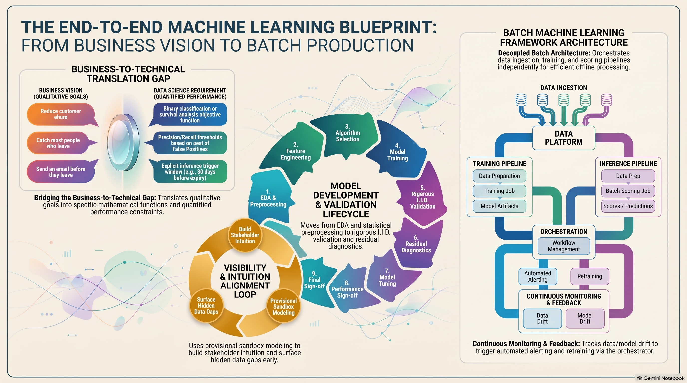
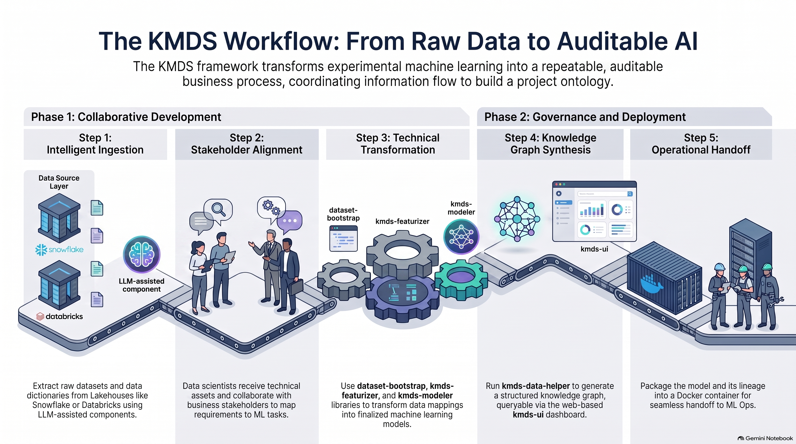

This post is part of a series on how KMDS has evolved as LLMs and coding agents have become standard tools for software development. In this post, I discuss the operational context for KMDS, the changes that have been made to the system, and the practical implications for enterprise data science teams.
Evolution of KMDS
KMDS integrates coding assistants directly into its workflow. Rather than functioning as a static knowledge graph, it becomes a living system in which:
- Coding agents support each phase of ML use case development.
- Their outputs — datasets, features, models, and diagnostics — are assembled and coordinated as a workflow.
- The knowledge graph keeps the process documented, reusable, and interpretable in enterprise settings.
Making It Concrete
To make this tangible, we need a working model for developing ML models in an enterprise setting. Let’s start with three foundational questions:
- How a use case is framed and deployed in a business or engineering environment.
- The role of AI automation versus human expertise in guiding decisions.
- The operating environment in which applications interact with other systems and embedded services.
Once that foundation is clear, we can show how KMDS is applied in practice. A useful schematic is shown below.

The basic idea is simple: building and deploying a production model happens in phases. The first phase is the initial deployment of a model to solve a business problem. This is usually the most time-consuming and difficult phase because both the business and modeling teams are learning about the problem and its operational context. The second phase is the ongoing maintenance of the model, which is usually easier because the teams have already learned about the problem and its operational context.
That initial phase usually looks like this:
- The team first develops a clear understanding of the business problem.
- It then translates that problem into a machine learning task, working closely with the business team to understand what data matters and how it behaves in real operations. The business explains the operational patterns; the modeling team tests that understanding, probes gaps, and defines the mapping from business needs to a canonical ML task such as classification, clustering, or regression. With modern tools like TabFM and TabDPT, a reasonable baseline model can often be built quickly. That is important: a baseline is not the final solution, but a starting point. A strong data science team can usually identify the most relevant features quickly.
- The team then reviews the model’s results with business stakeholders, clarifies remaining gaps, and develops a shared vocabulary for interpreting the problem. Generative AI can help with both the modeling work and the communication of results.
Once stakeholders agree on performance and interpretation, the model can be deployed. Generative AI can also help package it for production. But it is equally important to remember that the model was trained on data from a specific operational window. The team should verify that performance remains consistent with expectations and assess whether business conditions have changed. This matters especially when firms retrain models on fresh data even though the current version still performs well. In retail e-commerce, for example, retraining is often practical because it adapts the model to the current operating environment without requiring heavy human analysis.
When operational procedures, planning constraints, or shifting business conditions require it, the team may adjust an existing model to a new data window. This is typically a different exercise from routine retraining because it incorporates the most recent operational period and any business changes stakeholders want to evaluate for the next model iteration. If the changes are incremental, this may not be too demanding. If a new feature or a different modeling approach is introduced, the effort can become substantial.
A few observations matter here:
- Human agency is required to decide what counts as a good solution and what ideas the solution should be built around.
- Human agency is required to explain why successive model versions differ. AutoML can generate predictions, but it cannot tell us why the model behaves as it does or how the business itself is evolving.
- Human agency is required to interpret the data holistically. Automation can surface patterns, compare cohorts, and summarize model diagnostics, but the final interpretation still depends on domain context, operational reality, and judgment.
This is exactly the tension KMDS is designed to manage: combining expert human judgment with the strengths of generative AI.
The batch deployment model is chosen deliberately. Online deployment is rarely worth the cost for most use cases because it offers little ROI relative to the expense. In cybersecurity, ad tech, or large-scale hyperscaler settings, real-time scoring may justify the investment. For most applications, the value of instant predictions is limited, and the cost of always-on infrastructure is not. Batch processing gives flexibility: hourly, daily, or weekly schedules can be tuned to balance freshness and operational simplicity.
The practical view is that, for small and medium businesses, building a custom AI agent to automate an ML workflow is usually not worth it. Real-world enterprise data is messy, future requirements are uncertain, and edge cases can break fully automated systems. Despite the hype, a dedicated agent solution is often risky and low reward. A better first step is to pair a human expert with a coding agent. In a new deployment, that combination gives the best return: the AI can generate code quickly, while the human validates intermediate steps, handles messy data, and keeps the project moving safely. If the data and workflow remain stable over time, that work can then be delegated to an agent.
The lifecycle above makes the design goal of KMDS clear: the system has to preserve not just the model artifact, but the reasoning, assumptions, and history behind it. The next section describes the operating environment that makes that traceability workable at scale.
KMDS Operating Environment
To give you a better sense of the process and the logical components and actors, let’s examine the system a little deeper. In KMDS, the knowledge graph is the connective tissue that links the business problem, data lineage, model artifacts, version history, and decision rationale. An illustrative schematic of the process is provided in Figure 1. A typical solution development environment has the following components and actors:
Analytical Data Environment
- Lakehouse paradigm: Analytics data lives in modern lakehouse platforms such as Databricks or Snowflake.
- Unified storage: This combines the scalability of a data lake with the transactional integrity of a data warehouse.
- Streamlined pipelines: Data scientists work directly with curated, high-performance data layers for model training.
- Knowledge graph linkage: The graph records data provenance, feature definitions, and upstream assumptions so the model can be interpreted in context.
The ML Development Expert
- Expert practitioners: Designed for mid-level to senior data scientists.
- Strategic mapping: Users translate complex business problems into structured machine learning tasks.
- Technical execution: Users independently drive data augmentation, feature engineering, and iterative model refinement to achieve business goals.
- Decision traceability: The graph records which hypotheses were tested, which trade-offs were accepted, and why a particular model version was chosen.
Version Control System
- Git-centric workflow: Git is the single source of truth for the project.
- Artifact tracking: All code, configuration files, and documentation artifacts are version-controlled.
- Collaborative safety: This supports reproducible workflows, transparent peer review, and smooth CI/CD integration.
- Knowledge capture: Pull requests, notebooks, and design notes are connected to the graph so the project remains understandable long after the original author moves on.
AI-Coding Agents
- Next-generation IDEs: Solutions are developed locally or in cloud environments using VS Code.
- Coding agents: Data scientists use AI agents, especially GitHub Copilot, to accelerate development.
- Efficiency gains: AI helps with boilerplate code, routine debugging, and rapid prototyping of pipeline components.
- Traceable outputs: Agent-generated code, notebooks, tests, and summaries are linked back to the business intent and the model lifecycle in the graph.
Production Deployment Environment
- Standardized units: The target delivery artifact is a self-contained Docker container.
- Clear ownership: The KMDS lifecycle ends at containerization, isolating the model, dependencies, and inference code in an immutable image.
- Infrastructure-agnostic: Because the handoff occurs at the container level, the final artifact remains compatible with any downstream orchestration platform, whether a single cloud VM, a managed Kubernetes cluster, or a serverless runtime.
- Operational memory: The graph captures deployment assumptions, monitoring thresholds, and retraining triggers so the model can be maintained without reconstructing the original context from scratch.

Implications for Enterprise Data Science Teams
Clearly, LLMs have changed the productivity and velocity of data science teams in many ways. It is important to put this in perspective relative to the actual challenges enterprise teams face. The crucial shift is not that LLMs replace judgment; it is that they change where the team spends its time. In a KMDS environment, the practical implications are these:
- Human-agent pairing becomes the default operating model: For a new use case, the best results come from pairing a subject-matter expert with a coding agent. The agent can accelerate code generation, documentation, and prototyping, while the human confirms assumptions, handles edge cases, and keeps the work aligned with business reality. This is a practical productivity gain, not a replacement for the data scientist.
- Business-to-ML mapping remains the hard part: The team still has to translate a business question into a tractable machine learning task and validate that mapping against actual data. This is where LLMs are most helpful as assistants, not decision-makers. A model can be accelerated by automation, but the structure of the problem must still be driven by data and business context.
- Interpretability and monitoring are team responsibilities: Once a model is built, the work shifts to explaining what it is doing, why it changed, and whether the operating conditions still match the assumptions under which it was trained. That requires a disciplined process for validation, monitoring, and retraining. LLMs can help summarize diagnostics and propose checks, but they do not replace human judgment about what matters.
- The likely change is not fewer data scientists, but a different mix of work: In a high-volume AI-enabled environment, the value of a data science team is not just coding; it is in deciding what problem to solve, what constitutes a good solution, and how to maintain trust as conditions change. The most likely outcome is not a collapse in data science headcount, but a shift toward more strategic, judgment-heavy work and fewer routine tasks.
This does not mean the discipline becomes less valuable. If anything, it becomes more valuable in the places where judgment matters most. The question is less whether AI reduces the need for data scientists and more whether a firm can use AI to expand the number of business problems it can support responsibly. The more likely answer is that firms do expand their footprint, but they do so by leaning harder on the parts of the workflow where experienced data scientists still add the most value.
Citation
@online{sambasivan2026,
author = {Sambasivan, Rajiv},
title = {KMDS {Update:} {Context,} {Changes} and {Practical}
{Implications}},
date = {2026-08-18},
url = {https://rajivsam.github.io/r2ds-blog/posts/kmds_update_1/},
langid = {en}
}